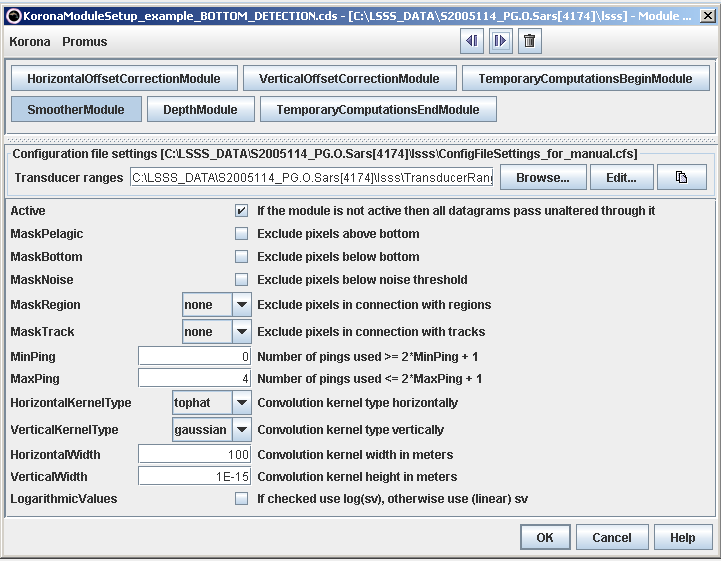
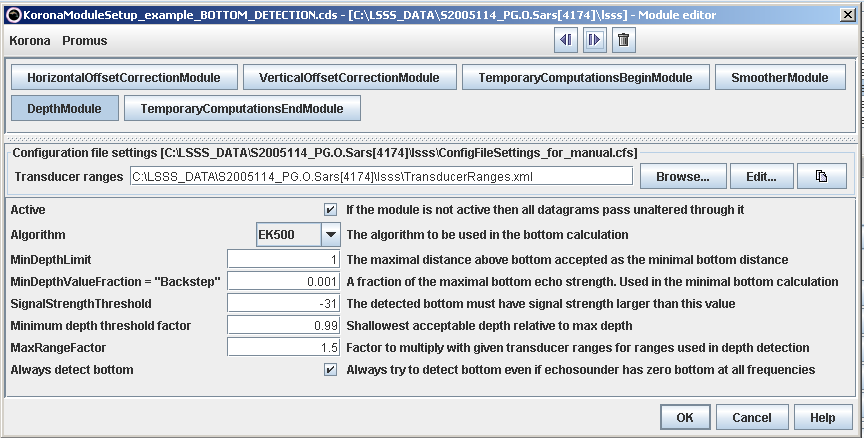
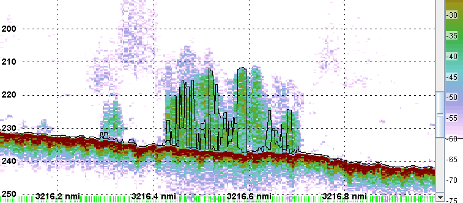

The common bottom detection in KORONA usees the same algorithm as Simrad EK500 and Simrad EK60. However, the settings used by the algorithm may be different. How well a particular bottom detection setup works depends on the bottom, i.e. a setup that works well in Norwegian waters may not work as well in Icelandic waters. The use of temporary calculations may solve or at least reduce this problem. All calculations between temporary calculations are rejected, but new datagrams (e.g. bottom datagram) are kept. The following KORONA module setup usually solves the challenge of possibly using the improper settings to the bottom algorithm, and may work unless the bottom depth changes very rapidly:
The module setup of the smoother module and bottom detection module in the KORONA module setup is shown below:


The figures below show bottom detection from EK60 (38 kHz) and from KORONA using the module setup above.
